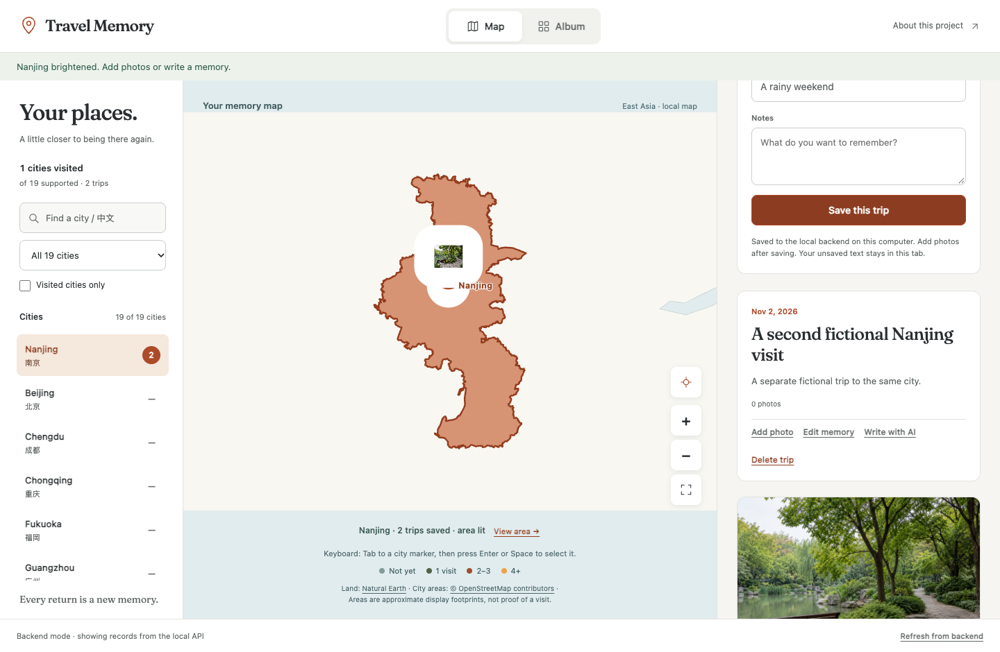
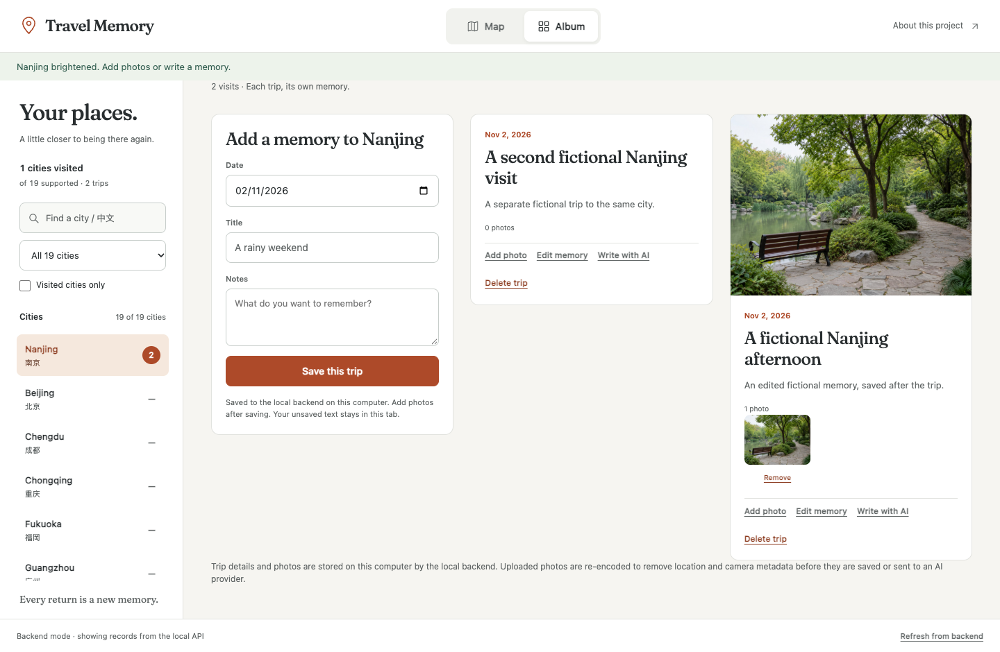

Choose a city
Search or select from the map and city list. The first release focuses on 19 cities, with approximate display boundaries.
AILT9019 · GROUP 21 · WORKING PROJECT
A travel album that lights a city when you save a trip. Return to the same place, add another card, and watch your map grow with your memories.
19 supported cities across Mainland China, Hong Kong, Macau, Taiwan and Japan · Local storage by default

THE IDEA
Photos are easy to collect. Places are harder to remember. Travel Memory Map gives each completed trip its own card and connects it to a city you can return to on the map.
HOW IT WORKS
Search or select from the map and city list. The first release focuses on 19 cities, with approximate display boundaries.
Add a title, optional notes and photos. Each saved trip becomes its own editable card in the local album.
The city area changes at one, two to three, and four or more visits. Another trip adds a card; editing an existing one does not add a visit.
A PLACE TO RETURN TO
Trips to the same city stay separate. Reopen a card, change its text, and keep the photograph beside the memory. The screenshot shows two fictional Nanjing trips created in the integrated app for this demonstration.
Actual application capture · synthetic photo · fictional notes

OPTIONAL AI
The Write with AI action shows the selected trip's city, date, title, notes and sanitised photo count before sending. Only that trip is included. The returned title and memory text are editable, and nothing is saved until the user chooses Save.
The app can also ask for clarification or refuse an inappropriate request. Without a configured provider it reports an error and leaves the saved card alone.
REAL SYSTEM DEMONSTRATION
Recorded on 2 November 2026 from an isolated copy of the integrated local backend. The run uses fictional notes and a synthetic photo, then shows the honest failure when no AI provider is configured.
This is an unedited browser recording of a test run, without narration. The steps at right explain the visible actions. See exact checks and limits ↗
TRY IT YOURSELF
Python 3.10+ is the only runtime requirement for the core app. The bundled map works without a map key, AI key or account.
Full quick start and Windows notesgit clone https://github.com/ThomasLin070217/AILT9019-Group21.git
cd AILT9019-Group21
python3 -m venv .venv
source .venv/bin/activate
pip install -r requirements.txt
python3 -m backendThen open http://127.0.0.1:8019/app/?mode=api&map=local
WHAT THE EVIDENCE SAYS
Python checks passed in the 2 November local review.
Node checks passed in the 2 November local review.
Integrated browser checks passed on an isolated backend.
A fresh-computer install, live AI cases, independent human scoring, and physical-device checks remain to be recorded.